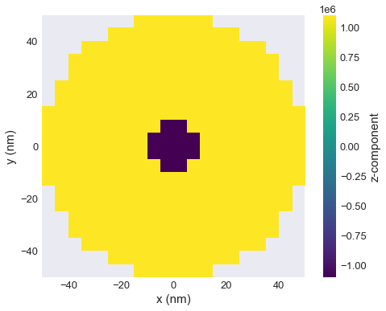
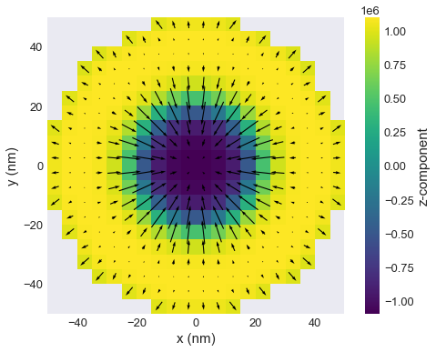
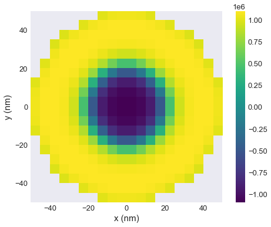
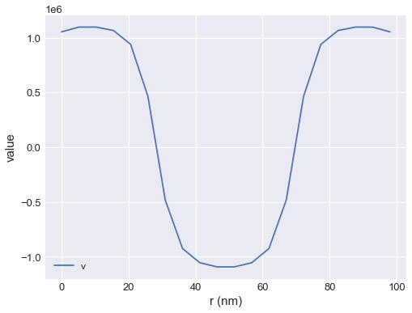

Skyrmion in a disk¶
In this tutorial, we compute and relax a skyrmion in a interfacial-DMI material in a confined disk like geometry.
[1]:
import oommfc as oc
import discretisedfield as df
import micromagneticmodel as mm
We define mesh in cuboid through corner points p1 and p2, and discretisation cell size cell.
[2]:
region = df.Region(p1=(-50e-9, -50e-9, 0), p2=(50e-9, 50e-9, 10e-9))
mesh = df.Mesh(region=region, cell=(5e-9, 5e-9, 5e-9))
The mesh we defined is:
[3]:
# NBVAL_IGNORE_OUTPUT
mesh.k3d()
Now, we can define the system object by first setting up the Hamiltonian:
[4]:
system = mm.System(name='skyrmion')
system.energy = (mm.Exchange(A=1.6e-11)
+ mm.DMI(D=4e-3, crystalclass='Cnv_z')
+ mm.UniaxialAnisotropy(K=0.51e6, u=(0, 0, 1))
+ mm.Demag()
+ mm.Zeeman(H=(0, 0, 2e5)))
Disk geometry is set up be defining the saturation magnetisation (norm of the magnetisation field). For that, we define a function:
[5]:
Ms = 1.1e6
def Ms_fun(pos):
"""Function to set magnitude of magnetisation: zero outside cylindric shape,
Ms inside cylinder.
Cylinder radius is 50nm.
"""
x, y, z = pos
if (x**2 + y**2)**0.5 < 50e-9:
return Ms
else:
return 0
And the second function we need is the function to definr the initial magnetisation which is going to relax to skyrmion.
[6]:
def m_init(pos):
"""Function to set initial magnetisation direction:
-z inside cylinder (r=10nm),
+z outside cylinder.
y-component to break symmetry.
"""
x, y, z = pos
if (x**2 + y**2)**0.5 < 10e-9:
return (0, 0, -1)
else:
return (0, 0, 1)
# create system with above geometry and initial magnetisation
system.m = df.Field(mesh, dim=3, value=m_init, norm=Ms_fun)
The geometry is now:
[7]:
# NBVAL_IGNORE_OUTPUT
system.m.norm.k3d.nonzero()
and the initial magnetsation is:
[8]:
# NBVAL_IGNORE_OUTPUT
system.m.plane('z').mpl()
/opt/miniconda3/envs/ubermagdev/lib/python3.8/site-packages/matplotlib/quiver.py:679: RuntimeWarning: divide by zero encountered in double_scalars
length = a * (widthu_per_lenu / (self.scale * self.width))
/opt/miniconda3/envs/ubermagdev/lib/python3.8/site-packages/matplotlib/quiver.py:679: RuntimeWarning: invalid value encountered in multiply
length = a * (widthu_per_lenu / (self.scale * self.width))

Finally we can minimise the energy and plot the magnetisation.
[9]:
# NBVAL_IGNORE_OUTPUT
# minimize the energy
md = oc.MinDriver()
md.drive(system)
# Plot relaxed configuration: vectors in z-plane
system.m.plane('z').mpl()
Running OOMMF (ExeOOMMFRunner) [2021/09/22 14:10]... <1> mmarchive killed
<2> mmarchive killed
(1.5 s)

[10]:
# NBVAL_IGNORE_OUTPUT
# Plot z-component only:
system.m.z.plane('z').mpl()

[11]:
# NBVAL_IGNORE_OUTPUT
# 3d-plot of z-component
system.m.z.k3d.scalar(filter_field=system.m.norm)
Finally we can sample and plot the magnetisation along the line:
[12]:
# NBVAL_IGNORE_OUTPUT
system.m.z.line(p1=(-49e-9, 0, 0), p2=(49e-9, 0, 0), n=20).mpl()
